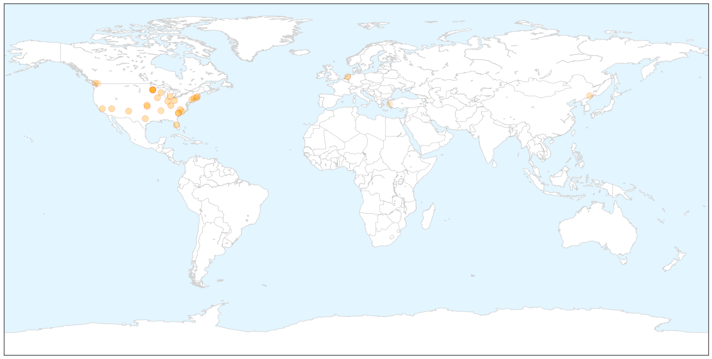

Toggle navigation
Early Warning
Return to Dashboard
Points of Interest
About the Project
Influenza
Jan 05, 2015
Compare to:
-
Dengue Fever
Hemmorhagic Fever
Mold/Fungal Infection
Meningitis
Pertussis / Whooping Cough
Middle East Respiratory Syndrome
Cholera
Hepatitis
Chikungunya
Yellow Fever
Bubonic Plague
West Nile Virus
Swine Flu
Ebola
Measles
Unknown
Mumps
30 Day Trends
Web: 1
alerts
, 0
warnings
Twitter: 7
alerts
, 0
warnings
Top Articles:
1.000
Flu cases increase in Emporia
1.000
Flu epidemic continues to rage with six children killed in one week
1.000
Influenza season strikes early and hard
0.999
Nine people died of flu-related causes in North Carolina during Christmas week
0.999
Officials warn of flu outbreaks at schools
0.999
Widespread flu outbreak in Connecticut
0.999
Centers for Disease Control says nation's flu epidemic is getting worse
0.998
Flu Season Takes Another Turn For The Worse
0.998
Flu season is here — and it could get worse
0.998
Flu season has arrived in NM
0.997
The flu didn't take a holiday in the Carolinas
0.995
Flu is in decline locally, but still dangerous
0.994
Maritime Quarantine & Isolation
0.994
Schools battle flu outbreak
0.990
Flu on the rise in Fond du Lac, across Wisconsin
0.989
2nd Lucas County resident dies of flu-related complications
0.989
Flu Spike Expected As Kids Return To School « CBS Minnesota
0.988
Flu outbreak affecting more than half of Alabama's 67 counties; state still among tops nationwide
0.987
Hospital tightens rules amid flu outbreak
0.987
Local flu cases declining by end of 2014, but still high
0.985
Feeling sick? Then stay home
0.979
Influenza Widespread Across Much of United States
0.969
Flu widespread in Rhode Island
0.960
Doctor: Flu more common after school breaks
0.952
New York City Requiring Flu Shots for Preschoolers
0.938
BMC Pediatric Sickle Cell Disease Patients Achieve Near-Perfect Influenza Vaccination Rate
0.930
B.C. child's death linked to enterovirus D68
0.913
Trying to reduce spread of flu
0.911
Flu shot may not be as effective this year, doctors still recommend it
0.856
Free Flu Shots Available
0.803
Avian Flu Scan for Jan 05, 2015
0.571
Saint Thomas Rutherford to offer free flu shots
0.556
More bird-flu cases in Washington State
Top Tweets:
No tweets found for Jan 05, 2015
Web/News Articles
X
Tweets
X
Article Locations
X

Article Confidences
X